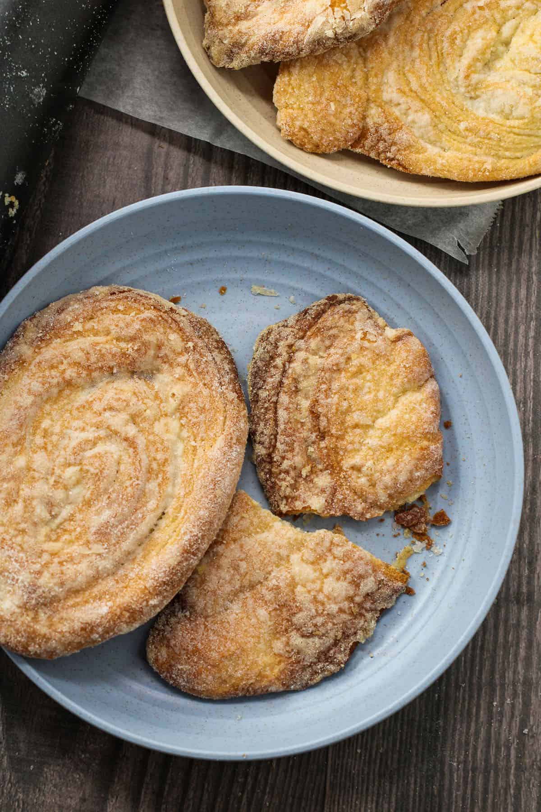

|
|
Otap

A crispy and sweet pastry from Cebu. Otap is a sweet, thin, oval-shaped Filipino treat made with puff pastry.
These treats are usually small in size, generously sprinkled with sugar, and have an incredibly crispy and crumbly texture. It is believed that otap originated in Cebu, and today it represents a signature product of the entire region.
The sugary biscuits are available at numerous local markets and stores and are usually enjoyed as a light dessert or a sweet afternoon snack.
INGRIDIENTS
1. 1 cup warm milk (105-115 F)
2. 2 ¼ teaspoons active dry yeast
3. ½ cup sugar
4. ½ teaspoon salt
5. 1 egg
6. ¼ cup vegetable shortening, very soft
7. 2 tablespoons butter, melted
8. 3 cups all-purpose flour (plus up ¼ cup for rolling)
sugar for rolling
For the Second Dough
1. ¼ cup butter, softened
2. ¼ cup vegetable shortening, softened
3. ¾ cup flour
INSTRUCTIONS
1. In the bowl of a stand mixer, pour the warm milk. Sprinkle the yeast and about 1 teaspoon of the sugar. Let the mixture stand for about 5 to 10 minutes, or until foamy.
2. Add the remaining sugar, salt, egg, shortening, and the melted butter. Stir with a wooden spoon until incorporated.
3. Add the flour, and using the dough hook, slowly beat the mixture on low until the flour is moistened.
4. Turn the speed to medium-high and beat the dough for 12 to 15 minutes, or until the dough gathers in the center and pulls from the side of the bowl.
5. If the dough is still very sticky after 10 minutes of kneading, sprinkle a little bit of flour to help with the stickiness.
6. Place the dough in a bowl and cover with a clean kitchen towel. Let it rise for 1 hour, or until doubled in size.
7. Meanwhile, make the second dough. Mix the softened butter and shortening together using the back of the spoon until creamy and smooth. Gradually stir in the flour and keep mixing until a smooth and soft dough forms.
8. Deflate the risen first dough and turn it over on a lightly floured surface. Using a rolling pin, roll into a rectangle about ¼-inch thick, with the long edge facing you.
9. Fold the upper third of the dough towards the center, then fold the lower third over to the center. Fold both the left and right sides of the dough towards the center to form a rectangular "envelope" shape.
10. Roll the dough into a rectangle again, about ¼ inch-thick. Using an angled spatula, spread the second dough over the rolled first dough until well-distributed.
11. Fold the dough again in the same way. Roll it out again into a rectangle as thin as possible without tearing.
12. Starting on the long edge, roll the dough into a tight log.
13. Preheat oven to 350 F.
14. Use a knife to slice the dough into ½-inch portions. Take one portion, and roll it out very thinly (paper-thin) into an oval shape. Lightly dust the rolling pin to keep the dough from sticking.
15. Carefully dip the shaped dough on a plate of white sugar to coat. Repeat with remaining dough portions.
16. Arrange the otap dough in a single layer on parchment-lined baking sheets and bake in the preheated 350 F oven for about 15 to 18 minutes, or until the top is golden and crisp.
17. Allow the otap to cool completely and remove from pan. |